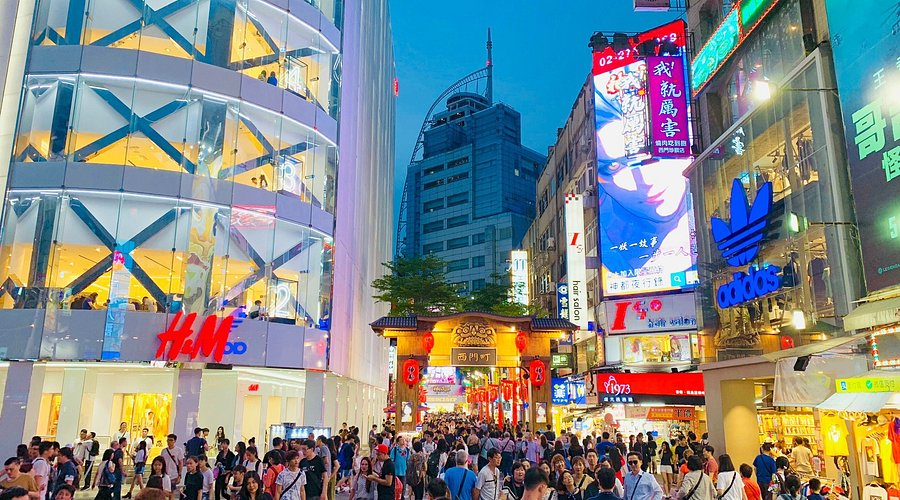

I went to Taiwan for Edutrip. My friends and I went to several night markets, but the best night market in my opinion is Ximending because it’s big and has a lot of fashion outlets and restaurants. When I got there, the food stalls were already calling me. The food in Ximending was the best. I haven’t explored all of Ximending because it’s as big as a town. Ximending is a very tempting place for tourists due to its many fashion outlets and restaurants.
In Ximending There are countless food stalls and restaurants. The foods in Ximending are the definition of perfection. If you are coming to Ximending you should try these foods that I recommend, trust me it’s worth it. If you're looking for noodles you better not miss the Ramen Nagi and you should try Ay-Chung flour rice noodle. Those noodles are the best noodles I have ever eaten. if you're looking for fried food, you should come and try the Taiwanese popcorn Fried Chicken King which is one of the best fried foods in Taiwan. In Ximending there are also a lot of street snacks such as the coin cheese pancake, tanghulu, and many more. Ximending will always look like an ocean of people on holiday. So, If you’re coming to Ximending, make sure you don’t miss out on those foods.
Ximending is full of taste and style. Not only that Ximending have a lot of food stalls and restaurants, but Ximending also has a lot of fashion outlets that keep you looking perfect. Those fashion outlets are H&M, Uniqlo, 2nd Street, and so much more. Ximending’s Uniqlo is very cool and big. It is so big that the inside looks like a maze full of clothing. Ximending also has some sporting goods stores such as Nike, Adidas, Under Armour, and more. Ximending is the heaven of shoppers. Prepare your money when you come to Ximending; the fashion outlets that Ximending offers are unlimited.
In conclusion, Ximending is a very tempting place for me or even everyone. If you come to Ximending, make sure you’ve tried all of the foods that I recommend. Also, check out the fashion outlets. So make sure to bring lots of money because you might end up buying a lot of things and having no money left after coming to Ximending.
